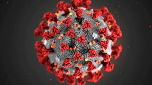

| 
Ana Júlia Nascimento Coelho Bernardo Policarpo Rafael Ferreira Thiago Silva |
A Secretaria de Estado de São Paulo confirmou nesta quarta-feira (1º) o terceiro caso da vairante Ômicron no Brasil. Trata-se do passageiro da Etiópia que desembarcou no último sábado quando testou positivo para Covid-19. A amostra foi sequenciada geneticamente pelo Instituto Adolfo Lutz do Governo de SP. O homem de 29 anos foi testado no aeroporto pelo laboratório CR Diagnósticos ao desembarcar no país e não apresentava sintomas. Ele é vacinado com as duas doses do imunizante da Pfizer. Em isolamento domiciliar desde o último sábado, sem sintomas e sendo acompanhado pela vigilância do município de Guarulhos, local que reside. Os dois primeiros casos da variante Ômicron foram confirmados pelo Lutz na tarde de ontem, após sequenciamento genético realizado pelo laboratório do Hospital Israelita Albert Einstein. Os casos são de homem de 41 anos e uma mulher de 37, provenientes da África do Sul. Eles desembarcaram no Brasil no dia 23 e fizeram exame antes de embarcar novamente no dia 25. Ambos tiveram resultado positivo em exames de PCR coletado no laboratório do Einstein instalado no Aeroporto Internacional de Guarulhos antes de viagem à África do Sul. Nesta quarta-feira (1), a vigilância municipal da Capital atualizou as informações dos pacientes para a pasta estadual e informou que ambos foram vacinados com o imunizante da Janssen na África do Sul, corrigindo a informação inicial que não haviam sido imunizados. A Secretaria de Estado da Saúde, por meio da Vigilância Epidemiológica, mantém o monitoramento do cenário epidemiológico em todo o território estadual. A confirmação de variantes ocorre por meio de sequenciamento genético. A pasta acompanha e auxilia nas investigações, em tempo real de todas as Variante de Preocupação (VOC = Variant Of Concern), tais como Delta, Alpha, Beta, Gamma e, agora, a Ômicron. Todo e qualquer agravo inusitado é monitorado pela vigilância estadual, seja proveniente de aeroportos ou portos. As medidas já conhecidas pela população seguem cruciais para combater a pandemia do coronavírus: uso de máscara, higienização das mãos (com água e sabão ou álcool em gel) e a vacinação contra a COVID-19. “É importante salientar que o comportamento de um vírus pode ser diferente em locais distintos em virtude de fatores demográficos e climáticos, por exemplo. Aproveitamos para reforçar a importância da vacinação, principalmente aquelas 3,9 milhões de pessoas que ainda não tomaram a sua segunda dose, pois somente desta forma estarão totalmente protegidas”, destaca o Secretário de Estado da Saúde, Jean Gorinchteyn. Para os que já completaram o ciclo vacinal, tem mais de 18 anos e um intervalo de 5 meses entre as doses da Coronavac/Butantan, AstraZeneca/Fiocruz e Pfizer, podem procurar os postos de vacinação para a dose adicional. Quem tomou a dose única da Janssen podem se imunizar com a dose adicional a partir de dois meses. |
|---|